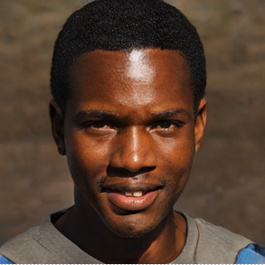

- Bakary Ouattara
- Âge : 26 ans
- Lieu de naissance : Alfortville
- Lieu d’habitation : Ivry-sur-Seine
- Profession : barman au Café Les Éditeurs, Paris 6e
- Pour moi, un mariage, c’est comme un bon cocktail :
une question de dosage, d’équilibre, et un soupçon d’originalité !
Et puis, il y en a pour tous les goûts !
Moi je ne veux pas d’esbrouffe, pas de clinquant,
mais une bonne énergie, quelque chose de cool, d’élégant,
où l’on prenne le temps de savourer le moment
tous mes amis mariés se plaignent que ça soit passé trop vite !
- Hélène Weixin
- Âge : 39 ans
- Lieu d’habitation : Ivry-sur-Seine
- Profession : professeur de langue vivante
- Je suis un véritable globe-trotter !
C’est ça, pour moi, pratiquer les langues vivantes, et l’anglais,
que j’enseigne, me permet d’aller partout,
de découvrir les autres cultures.
C’est comme cela que je me suis fait beaucoup d’amis, parfois très loin.
C’est ce qui me porte, ce réseau, cette ouverture !
